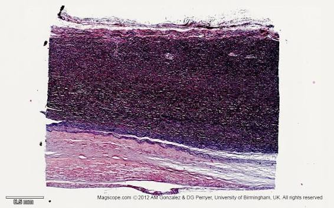

Total:
168
Correct:
0
Wrong:
0
Score:
0%
🔖 Saved (
0
)
1 By 1
🔊
SUBMIT 🏆
RESET 🔄

هذا العمل صدقة جارية على روح والدي رحمه الله رحمة واسعة وأسكنه الفردوس الأعلى من الجنة.
أسألكم الدعاء.
Questions on Histology of CVS
By Fathy Ahmed Ragab (Second Year Medical Student)
168 Interactive Qs
Training & Exam HUD
Save Bookmarks
🟢 TRAINING MODE
Instant Feedback + FX
🔴 EXAM MODE
Hidden Answers
All Sections (168)
Sec 1: Heart & Muscle
Sec 2: Skeleton & Valves
Sec 3: Blood Vessels
Sec 4: Histology of Vessels
Sec 5: Peripheral Circulation
MISSION COMPLETE
0%
0/168
0
Correct
0
Wrong
0
Skipped
REVIEW ANSWERS
RESTART